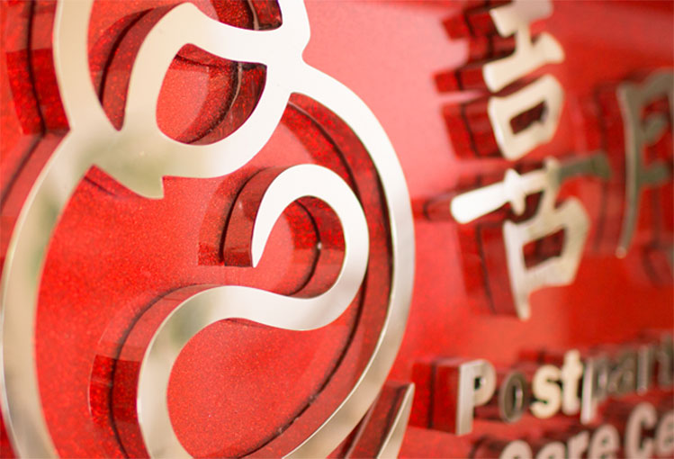
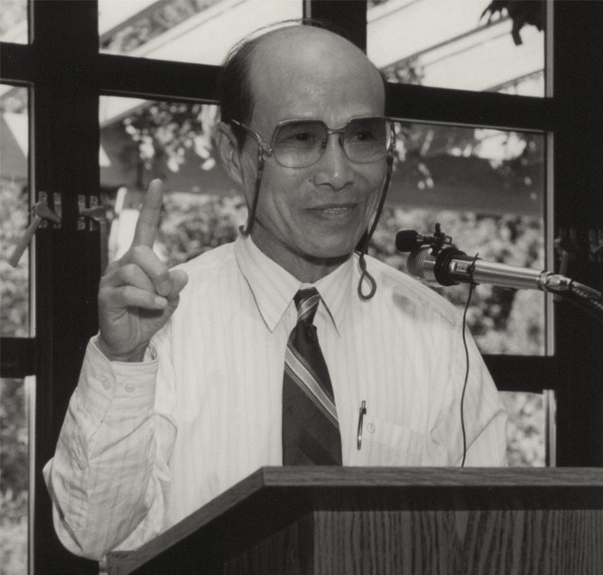
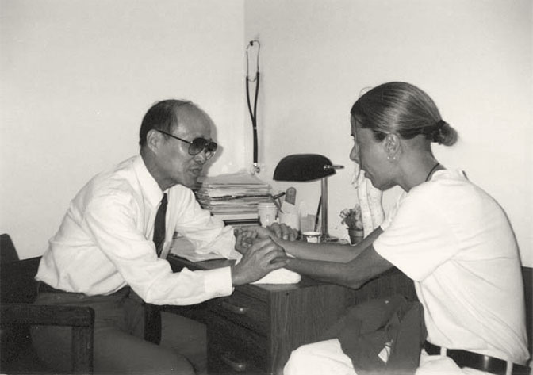
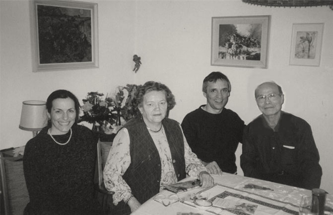

长按以识别二维码

简介
喜月母婴服务有限公司（喜月养生月子会所），2009年10月创办于中国杭州。公司提供以中医产后养生康复技术为核心，整合中医养生调治、现代医学护理、月子饮食、月子客房管理、月子生活护 理等为一体的个性化产后休养服务。现已成长为全国知名专业连锁型月子会所品牌企业。
历史与缘起
吴伯平先生，1935年出生于上海，师从秦伯未先生学医，后任职于中国中医研究院（现中国中医科学院），获国务院专家津贴。
1985年受邀赴世卫组织。之后30年，遍历全球30余个国家，在美法等国受邀教授传统中医。课余诊治数十万例。对国外妇人所患各类疾病诊治过程中，发现月子期间的不当生活照料，不只是中国人的体质，外国人的体质也同样会遗留各类问题。
吴伯平先生于2000年回国，定居杭州。2009年，与家人创办喜月养生月子会所。旗下吴伯平国医馆。以孕产期中医调理为主要科研方向。


